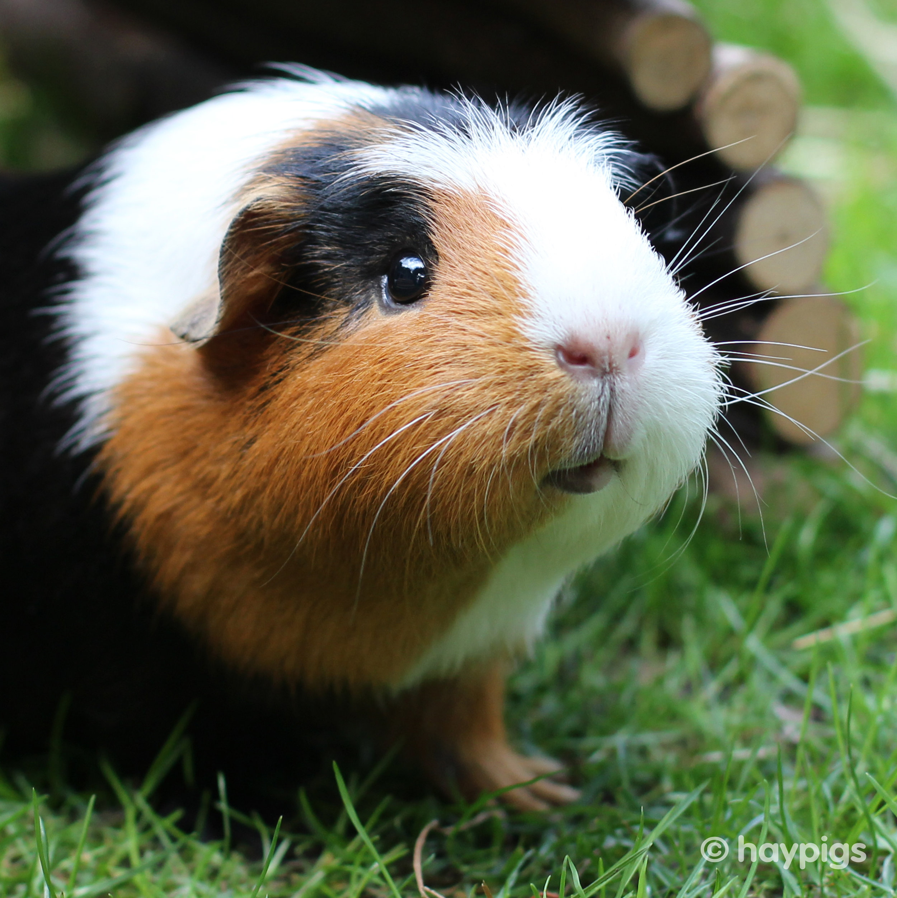
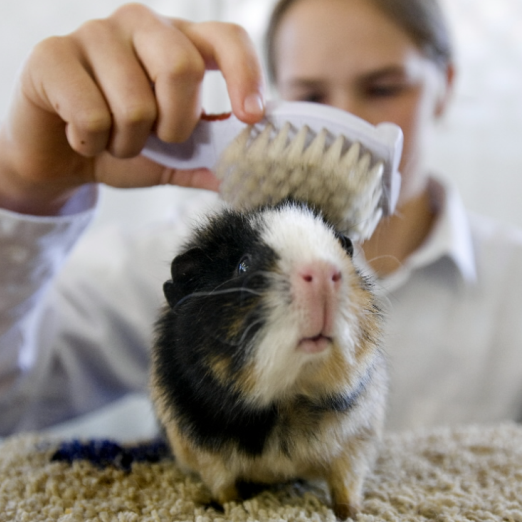
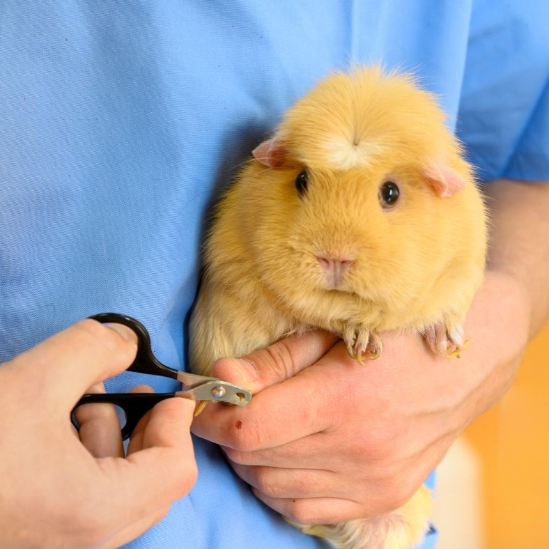

Popcorning Piggies
Guinea pig boarding and daycare
Our Mission
Everyone loves their furry (or non-furry) potatoes and that love is reflected back tenfold, whether through affectionate squeaks, warm snuggles, or zoomies across the house. Guinea pigs love their people and being such social animals they are always seeking your attention, but sometimes you can’t be there for them. Sometimes their favorite people have to leave, whether it’s for a trip across the country or maybe things just got a little too hectic, and that’s where we’re here to help! Our small but mighty crew will work hard to make sure your little piggy feels just as comfortable as when they’re at home.
Our Services
Boarding

Call or book ahead and reserve a spot and we’ll take care of
your
baby for as long as you *need! All guinea pigs will receive at least 8 square
feet
of clean bedding in a climate controlled area and fresh timothy hay, pellets,
mixed
veggies, and water daily. If your piggy is a bit picky or shy, we recommend
bringing
some of their favorite toys or snacks to make their stay more comfortable.
*Bookings over 3 weeks are subject to extra fees or
charges.
Grooming

While some piggies may be content with just snacks, pets, and a little snuggle now and then, some beans require a bit more attention. Upon request our professionally trained and experienced staff will take the time to give your piggy a spa day, brushing, cutting, and even washing your piggy’s hair while you’re away.
Nail Trimmings

For longer trips sometimes more care is needed. If you would like, our staff will take the time to properly trim your guinea pig’s nails in order to prevent any curling. This may be a stressful experience for some guinea pigs, but rest assured, our staff has years of experience taking care of guinea pigs and knows all the secrets of bribery so your guinea pig will quickly forget all the unease.
FAQ
We all know vacations and trips can go south sometimes, but don’t worry, we’ll care for
your
guinea pig until you can make it back.
*Extra fees or
charges
may apply.
If we see any signs of your guinea pig feeling unwell will contact you immediately! Your piggy’s health is our most important value, so we have a partnership with Small Pets Vets and a certified guinea pig vet available on call at all times, so you can rest assured in case anything does happen.
If you have concerns about your guinea pig’s needs, our staff would be more than happy to discuss extra care that may be required. It’s our duty to make sure they are well cared for, and if that requires giving them a little assistance along the way, we’d happily do so!